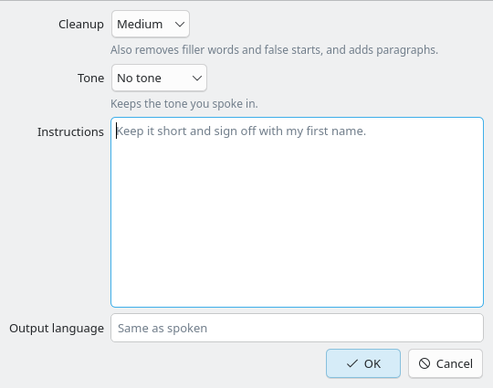

The Email profile's dialog today, grabbed from the Linux build.

Two rows join the dialog under Output language. Both start at Default, which follows the Dictation and Refinement pages, so existing profiles behave as before.
AI coding picks a fast Local Model. A Model row appears for the chosen service and starts at that service's own setting. Cleanup None already means no refinement, so the Refinement row says so rather than offering a None of its own.
Email refines with Anthropic on Opus 5.5 while every other profile stays on OpenAI. Thinking, speed and sign-in stay on the Refinement and Accounts pages; the Anthropic card shows there because a profile uses it.
Spoken Language is Japanese and the profile picks a Local Model that doesn't listen for it. Dictation still works: the profile's service is skipped and the Dictation page's choice runs, the way an unsupported fallback is skipped today. The caution says so before saving.
On the Writing Profiles page, a profile's own services join its summary. Profiles on Default read as they do today. The list also stays editable when Refinement is None, since a profile can now turn refinement on for itself.